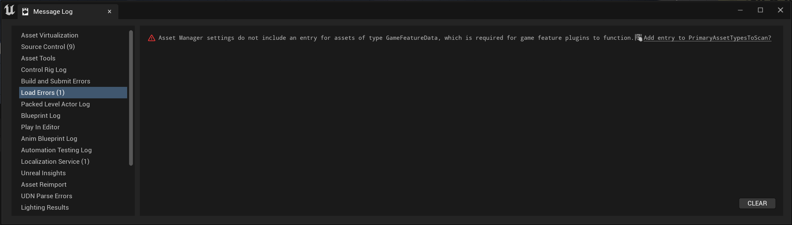

For 5.0 #
As an Engine Plugin #
Download Plugin from Marketplace and make sure it's enabled in your Plugins window: Edit > Plugins > Gameplay > GASCompanion.
As a Project Plugin #
- Download the latest version of GAS Companion for 5.0 from Marketplace
- Navigate to the installation folder. By default it's
C:\Program Files (x86)\Epic Games\UE_5.0\Engine\Plugins\Marketplace\GASCompanion - Create a Plugins folder in your project
- Copy the Plugin folder from the Engine Plugins to your project's plugin folder (
../UE_5.0/Engine/Plugins/Marketplace/GASCompaniontoYourProject/Plugins/GASCompanion) - Start the project (Re-generate Project Files and Compile from IDE if needed)
The advantage of using it as a Project plugin is that you can easily edit the code if you need to. If the plugin gets updated on the marketplace though, your project plugin won't be updated (which can be a good thing if you want to lock down the version).
If you're using the plugin as a Project plugin, it is recommended to uninstall the Engine version.
First opening #
When first opening a project with GAS Companion plugin enabled, you'll be granted with the following in the message log:

This is not really an error but rather validation checks to ensure proper configuration for Modular Gameplay and Game Features.
This is done by the Game Features plugin in engine (which is enabled by default when GAS Companion is enabled) to ensure proper configuration automatically for you. Upon clicking the link "Add entry to PrimaryAssetsTypesToScan?", DefaultGame.ini file will be updated accordingly and those validation errors won't appear anymore when restarting the editor.
Click the link and restart the editor (even if you don't intend to use Game Features in your project, it won't impact you).